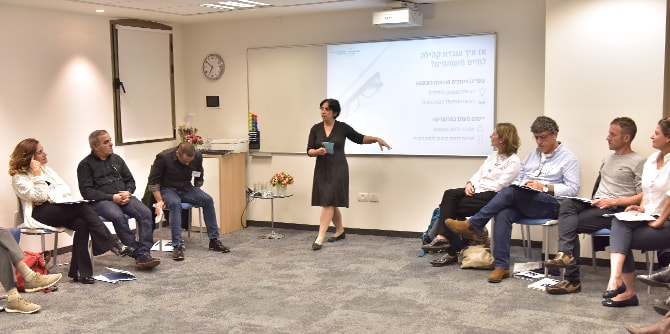

רבים מבוגרי מנדל הם מנהיגים ומנהלים בתחומי החינוך, המפתחים גישות, יוזמות ותוכניות חדשניות כחלק מחזונם ומשליחותם, ומעוניינים להציגן לפני ראשי משרד החינוך. באירוע שלישי במנדל שנערך ב-25 בדצמבר ביחידת הבוגרים השתתפה ד"ר מירי שליסל-אדלר, יו"ר המזכירות הפדגוגית במשרד החינוך ובוגרת מחזור ד' בבית ספר מנדל למנהיגות חינוכית.
בפתיחת הערב הציגה ד"ר שליסל-אדלר את האתגרים ואת ההזדמנויות שמזמן תפקיד יו"ר המזכירות הפדגוגית, ושיתפה בחזונה המקצועי ובאופן שבו תפעל להגשימו במסגרת תפקידה החדש.
לאחר מכן הציגו בוגרי בית ספר מנדל למנהיגות חינוכית שש תכניות ויוזמות חדשות. גידי יהושוע, בוגר מחזור כ"ב, מנהל מחלקת וידאו ומדיה במט"ח, הציג את המהפכה החינוכית התקשורתית ואת המורים העולמיים החדשים הפועלים בפלטפורמות הדיגיטליות. גידי הראה כיצד אפשר לרתום תופעה זו לטובת שיפור הלמידה והחינוך גם בישראל.
שימרית ברדה, בוגרת מחזור כ"ד, ראשת תחום חינוך במרכז לפסיכולוגיה יישומית במרכז הבינתחומי בהרצליה, וחברתה למחזור ענת יונה עמדי, מובילת "שינוי בחינוך" במרכז הבינתחומי, הציגו והדגימו כיצד ידע מחקרי יישומי בתחום היחסים בין קבוצות יכול לשרת את השדה החינוכי ולקדם חינוך לשותפות.
אורית סומר, בוגרת מחזור כ"ג ומנהלת בית הספר היסודי "האמנים" ברמלה, הציעה שינויים במבנה שבוע הלימודים בביה"ס היסודי במטרה להפחית אלימות ושחיקה וכבסיס לחיזוק תחושת הביטחון של התלמידים ולהגדלת פניותם להתמסר לתהליכי הלמידה.
ד"ר גידי קפלן, בוגר מחזור י"ט, מורה לרובופיסיקה בחינוך העל-יסודי, הציג אפיקים חדשים לפיתוח תחושת המסוגלות של תלמידים ולעידוד היצירתיות שלהם, ושיתף מניסיונו בשילוב "מייקינג" בחינוך היסודי ותוכנית רובופיסיקה בחינוך העל-יסודי.

המצגת של מרים דרמוני שרביט ושולה מולא, בוגרות מחזור י"ב, ושל ד"ר שני פייס, בוגרת מחזור כ"ג – שלושתן מהמחלקה לחינוך אזרחי וחיים משותפים במט"ח – הציגה את גישת הלימוד המשותף, ובעיקר את ההיבט של הכשרת המורים, בתור מענה משמעותי לפיתוח מקצועי של מורים בתחום הכישורים הגלובליים.
נעמי יפה-עיני, בוגרת מחזור כ"ב, פסיכולוגית ויזמית חינוכית, הציגה והדגימה מודל של מפגש לימודי שעיקרו "קריאה פסיכולוגית" של טקסט תנ"כי כבסיס לשיח אותנטי ורלוונטי שיעניק למורים ולמטפלים כלים להעצים ולהכין תלמידים לאתגרי החיים.
את הערב תכננו והובילו
ד"ר גרניט אלמוג-ברקת, מנהלת יחידת בוגרי מנדל, ואיילה בבלי, מנהלת העריכה ביחידה. בערב השתתפו
פרופ' חיים אדלר, חבר סגל ביחידת בוגרי מנדל, ובוגרים רבים שהגיבו לנושאים שהוצגו, תרמו מהידע ומהניסיון שלהם ויצרו שיתופי פעולה עתידיים.
{kind=link}
{kind=link}